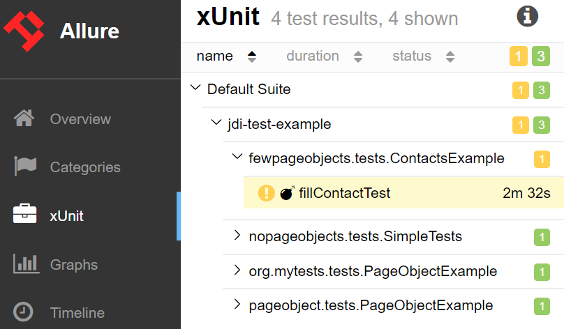
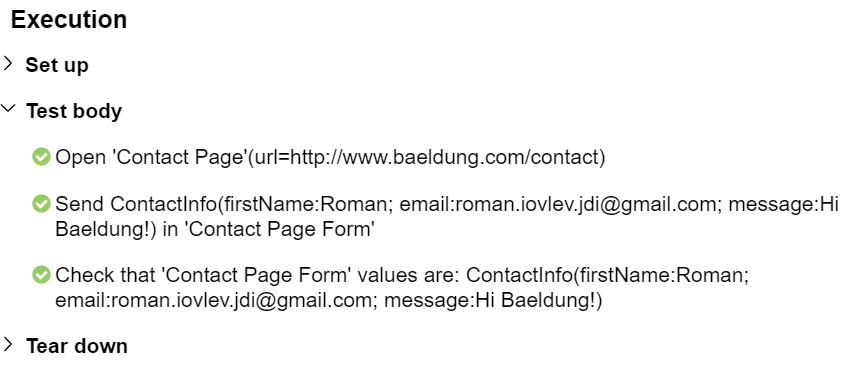
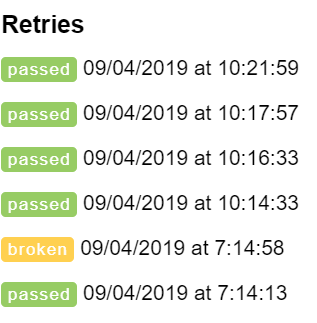
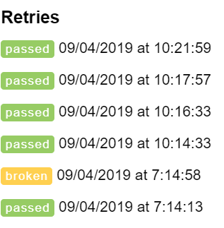
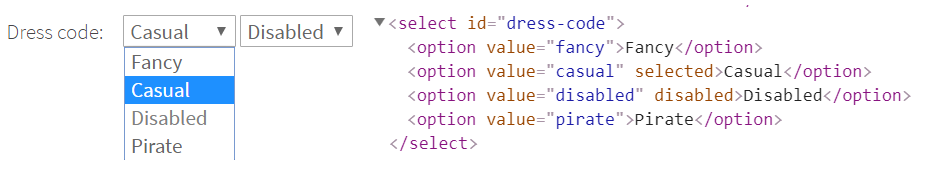
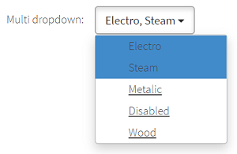
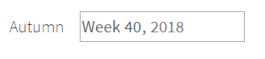

JDI Light Framework
JDI Light – is powerfull Test Automation Framework that helps to makes your tests fast, sustainable and provide obvious and predictable test run result
JDI Light powered by Selenium and has simple integration with Selenium based projects


Highlights
- Has simple integration with any Selenium based project that allows to increase projects stability, add user actions logs and enrich standard WebElements capabilities with new features in minutes (TBD add Guide)
- Extends Page Objects pattern with powerful UI Elements: Buttons, TextFields, Forms, Tables etc ( TBD add good links to examples)
- Write stable and predictable tests that fail only because of changing business logic or layout. No more waits, thread sleep and other flaky staff
- Increase your tests execution speed in general and especially for complex cases like search in big tables, dropdowns with hundreds elements or enter text with thousand lines
- Get detailed logs and good reports of all user actions with no effort
- All UI elements has assertions/matchers that powered by Hamcrest and wait expected condition during timeout
- Easy integration with all modern Automation tools: CI (Jenkins, TC etc.), Logging (Log4j or any other slf4j based logs), Reporting (Allure or Report Portal); Browser/Devices farms (Selenium Grid, Browser Stack, Selenoid etc.), Test Runners (TestNG, JUnit) etc.
Introduction
Simple JDI examples
Create simple Login test
For the beginning I would like to show you how tipycal problems can be solved with JDI. Let's start from Login, most of the tests starts from this you need to login on site.
Java code example can be found by link
Test Scenario
@Test
public void loginTest() {
homePage.open();
userIcon.click();
loginForm.loginAs(DEFAULT_USER);
homePage.checkOpened();
}
- Open HomePage (https://epam.github.io/JDI/index.html)
- Click on User Icon (to open login dialog)
- Login as some default user
- Enter 'epam' in login textfield
- Enter '1234' in password textfield
- Press 'Enter' button
- Validate that HomePage is openned
[22:17.102 STEP] : Open 'Home Page'(url=https://epam.github.io/JDI/index.html)
[22:23.617 STEP] : Click on 'User Icon'
[22:23.727 STEP] : Login as User(userName:epam; password:1234)
[22:24.516 STEP] : Check that 'Home Page' is opened (url CONTAINS '/index.html'; title EQUALS 'Home Page')
So simple! But this is not all, just Run this test in your IDE and what you will get?
- Detailed log in Console output:
Nice! Isn't it?
- Same log in log file (src/test/.logs/) if you would like to see test execution results remotely (require log4j2.xml in src/test/resources)
- Nice Allure report of your test execution! (require Allure settings in pom.xml)
Just move allure-results folder in folder and run maven > Plugins > allure > allure:serve

@JSite("https://epam.github.io/JDI/")
public class JdiTestSite {
public static HomePage homePage;
}
@BeforeSuite(alwaysRun = true)
public static void setUp() {
initElements(JdiTestSite.class);
}
@Url("/index.html") @Title("Home Page")
public class HomePage extends WebPage {
@Css("form") public static LoginForm loginForm;
@Css("img#user-icon") public static Icon userIcon;
}
public class LoginForm extends Form<User> {
@Css("#name") TextField userName;
@Css("#password") TextField password;
@Css("[type=submit]") Button enter;
}
UI PageObjects
So now let's look on PageObjects we have in JDI. In example above for "Login test" we have following PageObjects: * Site - entity for your application. Collects all the Pages of your application, that can be init in one command
- HomePage - Pages collects elements: common, complex and composite. Pages already have meta information about Url and Title and you can execute common actions with this Pages like: open, checkOpenned, get Url/Titile, zoom, scroll, work with cookies etc.
- LoginForm - Forms and Sections are logical parts of pages, they can include other sections or just elements. Forms also have additional actions like fill, submit, check etc.
- UI elements (Typified elements) like Button, TextField, Checkbox, Icon etc. - are simple elements that represents real elements on UI
This is common JDI project structure
@Test
public void nonPageObjectTest() {
WebPage.openUrl("https://epam.github.io/JDI/index.html");
$("img#user-icon").click();
$("form #name").input("epam");
$("form #password").input("1234");
$("form [type=submit]").click();
Assert.assertEquals(WebPage.getUrl(), "https://epam.github.io/JDI/index.html");
}
public class LoginForm extends Form<User> {
TextField userName = $("#name");
TextField password = $("#password");
Button enter = $("[type=submit]");
}
Short term non Page Objects style
If you need to check somethhing fast and won't write Page Objects you can use simple like "JQuery/Selenide" style without any additional code
You also can init your Page Objects directly with elements if don't like annotations
Smart Test locators
<input type="text" id="name">
<input type="text" id="last-name">
<input type="text" id="passport-code">
<input type="text" id="passport-number">
<button id="submit-button">
public class UserCard extends Form<User> {
@Css("#name") TextField name;
@Css("#last-name") TextField lastName;
@Css("#passport-code") TextField passportCode;
@Css("#passport-number") TextField passportNumber;
@Css("#submit-button") Button submitButton;
}
If Smart locator rule is id
WebSettings.SMART_SEARCH_LOCATORS = asList("#%s");
and convertation rule is hyphen to java name
WebSettings.SMART_SEARCH_NAME = StringUtils::splitHyphen;
So you can write
public class UserCard extends Form<User> {
TextField name;
TextField lastName;
TextField passportCode
TextField passportNumber;
Button submitButton;
}
or just write all TextFields in one line
public class UserCard extends Form<User> {
TextField name, lastName, passportCode, passportNumber;
Button submitButton;
}
If you have your developers follow some standard way to mark ui elements or you have an agreement to add special attribute you can even avoid to write locators for elements and make your page objects much more compact.
You can manage how to create locator from field name using
WebSettings.SMART_SEARCH - Function that invoked if you have element has no locator or just setting a list of used locators using
WebSettings.SMART_SEARCH_LOCATORS - list of locators that can be used to try to find element
WebSettings.SMART_SEARCH_NAME - function how to create locator name from filed name (this value will be passed as %s parameter in SMART_SEARCH_LOCATORS)
@Test
public void assertTest{
title.is().text(containsString("jdi"));
name.assertThat().text(is("Roman"));
color.has().attr("color", is("red"))
}
@Test
public void chainAssertTest{
title.assertThat()
.text(containsString("jdi"))
.attr("color", is("red"))
.tag(is("h1"))
}
@Test
public void listAssertTest{
searchResults.is().notEmpty();
searchResults.assertThat()
.size(equalTo(10))
.any(e -> e.name.equals("Jdi intro 2"))
.each(e -> e.name.toLowerCase().contains("jdi"))
.onlyOne(e -> e.name.contains("Jdi intro 1"))
.noOne(e -> e.name.contains("Selenide"));
}
@Test
public void tableChainTest() {
users.assertThat()
.displayed().size(6).size(greaterThan(3))
.notEmpty().row(d -> d.user.contains("Ivan"))
.allRows(d -> d.user.length() > 4)
.atLeast(3).rows(d -> d.type.contains("User"))
.row(SPIDER_MAN)
.exact(2).rows(d -> d.description.contains(":VIP"))
.exact(1).rows(SPIDER_MAN);
}
Asserts/Matchers integrated with elements
JDI has really flexible set of matchers integrated in elements
- To access elements matchers you can use methods:
is()
assertThat()
has()
waitFor()
shouldBe()
All of them works in the same way and difference in they name just for tests readability - JDI matchers powered by most popular in Java world matcher library Hamcrest
And of course you can chain this matchers for multiple conditions validation - And with JDi no more waits or flaky tests with errors
JDI matchers handle most kinds of this problems and will pass when you expect this and fail if this is an real erorr
Really useful, do you agree?
Custom elements
public class Checklist extends HtmlElement {
@Override
public boolean isSelected() {
return find("<<").hasClass("active");
}
}
public class Checklist extends HtmlChecklist {
@Override
public boolean isSelected(HtmlElement value) {
return hasClass("active") && attr("ui").equals("label");
}
}
public class ContactForm extends Form<Contacts> {
TextField name, lastName, position, passportNumber, passportSeria;
...
@UI("['Submit']") public Button submit;
@Override
public void fillAction(Field field, Object element, Object parent, String setValue) {
if (isInterface(field, TextField.class))
((TextField)element).higlight();
super.fillAction(field, element, parent, setValue);
}
}
JDI html elements can handle typical standard cases but each application has unique culture of layout development and if your developers not follow common standards you can easily create pack of elements specific to your application and use them in JDI
You can create your own elements or just extend existiong one with overriding one or two functions.
See examples in code
Menu Check item
Contact Form
Start new project with JDI
You can Start new Test Automation Project with JDI in seconds
Just download one the templates from Github > jdi-light-...
Java + Allure + TestNg (recommended)
Java + Allure + JUnit
CSharp + NUnit
How to improve your Selenium project with new capabilities in few minutes
Logging and Reporting
Tutorial
Integration
This is set of simple tutorials that helps you to learn how to write tests fast with JDI Light JDI Light.
Maven Dependencies
<dependency>
<groupId>com.epam.jdi</groupId>
<artifactId>jdi-light-html</artifactId>
<version>RELEASE</version>
</dependency>
In order to add JDI Light in to your project add in to the pom.xml file following dependency:
The latest version can be found in the Maven Central Repository
Configuration
driver=chrome
#drivers.version=2.23 | LATEST– by default latest
#timeout.wait.element=10 – timeout in seconds to wait element on opened page
#timeout.wait.page=60 – timeout in seconds to open a new page
domain=https://epam.github.io/JDI/ – web application (used if you work with one application in tests)
#page.check.after.open=NONE – no auto-validation | NEW_PAGE – will validate page url and titile utomatically while new page opens | EVERY_PAGE – validate page on each action
#page.load.strategy=normal – how to wait page load
#element.search.strategy=strict | soft | visible, multiple | any, single – how to find element
#browser.size=MAXIMIZE | 1024x762
To run tests in JDI you don’t need to setup anything. By default JDI will download Chrome driver automatically, setup it and run while you try to access some page.
But if you would like to change default settings you can do this in test.properties file (src/test/resources). Here some typical settings.
Simple Test Example
public class JDILightExample {
public openPage() {
WebPage.openUrl("http://www.baeldung.com/")
}
}
Simple test to open http://www.baeldung.com/ site will look like this:
You also can do all typical actions with browser using WebPage static methods like: getUrl(), getTitle(), back(), forward(), getHtml(), refresh()
And not so typical like scroll up/down/left/right/top/bottom and zoom the page.
@JSite("http://www.baeldung.com/")
public class SiteJdi {
@Url("/") @Title("Baeldung | Java, Spring and Web Development tutorials")
public static HomePage homePage;
}
public class PageObjectExample implements TestsInit {
public void openPage() {
homePage.open();
homePage.checkOpened();
//...
}
public void onHomePage() {
homePage.shouldBeOpened();
//...
}
}
But if you would like to operate with pages we recommend to create PageObject for it:
Pretty simple and obvious isn’t it? Now we can open home page in one line after that we can validate that correct page opened (will throw exception if action failed).
Additional option is to use method shouldBeOpened() that validate if page is already opened and if not will open it. This smart action can save your tests time.
public interface TestsInit {
static void setUp() {
PageFactory.initElements(SiteJdi.class);
}
}
*I hope you awareness enough and interested about TestInit class. This is just simple one method interface that initialize all PageObjects (HomePage in our case) in one line.
Yes with JDI Light you can do it in one line for all your Page Objects!
Fill Contact Form Example
Scenario
Now let’s look on more complex case:
0. Open Baeldung
1. Go to Contact page
2. Fill Contact Form
3. And validate that data in form is correct
* Thanks to captcha we will not sent the form in this case but in your test application you can switch off captcha and validate filled form on next page for example or in DB
Create PageObjects
@Url("/") @Title(value = "Baeldung | Java", validate = CONTAINS)
public class HomePage extends WebPage { }
@Url("/contact") @Title("Contact Me | Baeldung")
public class ContactPage extends WebPage {
@FindBy(css = "[name=first_name]") TextField firstName;
@FindBy(css = "[name=email]") TextField email;
@FindBy(css = "[name=message]") TextArea message;
@FindBy(xpath = "//*[text()='Send Your Message']") Button send;
}
First we need to create 2 Page Objects: HomePage – from previous example and ContactPage with fields and button on it
public class ContactPage extends WebPage {
@Css("[name=first_name]") TextField firstName;
@Css("[name=email]") TextField email;
@Css("[name=message]") TextArea message;
@XPath("//*[text()='Send Your Message']") Button send;
}
public class ContactPage extends WebPage {
@UI("[name=first_name]") TextField firstName;
@UI("[name=email]") TextField email;
@UI("[name=message]") TextArea message;
@ByText("Send Your Message") Button send;
}
But standard @Findby can be simplified in JDI annotations @Css and @XPath or even with universal @UI:
@JSite("http://www.baeldung.com/")
public class BaeldungSite {
public static HomePage homePage;
public static ContactPage contactPage;
}
In this case our Site entity will look like this:
Create Test Data
public class ContactInfo extends DataClass<ContactInfo> {
public String firstName, email, message;
}
We need to fill the form with some Contact information, let’s create an entity for it
ContactInfo MY_CONTACT = new ContactInfo().set(c -> {
c.firstName = "Roman";
c.email = "roman.iovlev.jdi@gmail.com";
c.message = "Hi Baeldung!";}
);
And fill it with some data:
_* You can put you entities in separate DataProvider file or just near the test if this is one time entity
Init Page Objects and Open BaeldungSite site
public interface TestsInit {
static void setUp() {
logger.setLogLevel(STEP);
initElements(BaeldungSite.class);
homepage.open()
}
}
Init all this pages and open home page of Baeldung site:
* For demo purposes we also set log level to STEP in order to have business actions level log. For more details you can change log level to INFO (by default) or DEBUG.
Write test scenario
public class ContactsExample implements TestsInit {
@Test
public void fillContactTest() {
contactPage.open();
contactPage.asForm().send(MY_CONTACT);
contactPage.asForm().check(MY_CONTACT);
}
}
And now we can write a test:
0. Open Baeldung
1. Go to Contact page
2. Fill Contact Form
3. And validate that data in form is correct
Test run results
Test scenario and log
This simple 3 rows test will:
- Open Baeldung site
- Navigate to Contact Page
- Fill contact form with your data and
- Validate that form filled correctly
Exactly what see in test scenario. As result you will see detailed user actions log:
[ STEP 21:52.780]: Open 'Home Page'(url=http://www.baeldung.com/)
[ STEP 21:59.008]: Open 'Contact Page'(url=http://www.baeldung.com/contact)
[ STEP 22:00.236]: Send ContactInfo(firstName:Roman; email:roman.iovlev.jdi@gmail.com; message:Hi Baeldung!) in 'Contact Page Form'
[ STEP 22:01.633]: Check that 'Contact Page Form' values are: ContactInfo(firstName:Roman; email:roman.iovlev.jdi@gmail.com; message:Hi Baeldung!)
Pretty much the same as test scenario do. You can share this log with BA or Client to demonstrate what your tests do.
If you need more details for maintenance purposes, you can change the level of your log to INFO. Using log4J settings you can customize output streams and log formats.
Page Object actions with elements. Handle flaky tests
You don’t need to implement open(), send() and check() methods they are already developed for you (as well as a lot of other typical functions).
In addition, you don’t need to think about Thread sleeps, Explicit waits, stale or no such element exceptions. JDI Light will handle all staff that can make tests flaky for you. You just need to think about business part of test scenarios.
Failed test and Allure reports
Failed to execute 'check' for element 'Contact Page Form' action during '10' seconds.
Exception: Check form failed:
Field 'firstName' (Actual: 'Roman (changed)' <> Expected: 'Roman')
You can stop before method check execution, change some filled (e.g. firstName to “Roman (changed)”) and continue test to see that check will throw exception in case of some mismatch. And this assertion will be pretty much readable also:
JDI has good integration with Allure so as result of this test (if Allure are in place) you can see colorful and readable report with all tests execution results:

- Test execution log

- Detailed test’s fail reasons information (you can click on … under error text and observe full exception stack trace)
 - And history of all previous tests executions

- And history of all previous tests executions

To generate such Allure report you need to copy allure-results folder from project root to target folder and run allure-serve maven plugin
Create Custom controls
TBD
JDI settings at glance
TBD
Test Framework structure
TBD
Theory
UI Objects Pattern (Extend your PageObjects with UI elements)
TBD
Entity Driven Testing
TBD
Smart Locators
<input type="text" id="name">
<input type="text" id="last-name">
<button id="submit-button">
public class UserCard : Form<User>
{
[FindBy(Css = "#name")]
TextField Name;
[FindBy(Css = "#last-name")]
TextField LastName;
[FindBy(Css = "#submit-button")]
Button SubmitButton;
}
If Smart locator rule is id:
SmartSearchLocator = "#{0}";
and convertation rule is hyphen to csharp name:
SmartSearchName(string name) => StringExtensions.SplitHyphen(name);
So you can write:
public class UserCard : Form<User>
{
TextField Name;
TextField LastName;
Button SubmitButton;
}
public class UserCard extends Form<User> {
@Css("#name") TextField name;
@Css("#last-name") TextField lastName;
@Css("#submit-button") Button submitButton;
}
If Smart locator rule is id:
WebSettings.SMART_SEARCH_LOCATORS = asList("#%s");
and convertation rule is hyphen to java name:
WebSettings.SMART_SEARCH_NAME = StringUtils::splitHyphen;
So you can write:
public class UserCard extends Form<User> {
TextField name;
TextField lastName;
Button submitButton;
}
If you have your developers follow some standard way to mark ui elements or you have an agreement to add special attribute you can even avoid to write locators for elements and make your page objects much more compact.
You can manage how to create locator from field name using.
Settings interface ISmartLocators contains:
SmartSearch - method that invoked if you have element has no locator
SmartSearchLocator - locator that can be used to try to find element
SmartSearchName - method how to create locator name from filed name (this value will be passed as parameter in SmartSearchLocator)
JDI Locators (simple as css powerful as xpath)
TBD
FAQ
TBD
Documentation
Extended Selenium features
TBD
Simple elements
TBD
Complex elements
RadioButton
RadioButton – interface element that allows user to select one option from a predefined group.
Radio buttons are represented by the following class:
- Java: com.epam.jdi.light.ui.html.complex.RadioButtons
- C#: JDI.Light.Elements.Common.RadioButton
@UI("[name=colors]")
public static RadioButtons colors;
public static RadioButtons colorsNoLocator;
@Test
public void selectTest() {
colors.select(Blue);
assertEquals(colors.getValue(), "Blue");
colorsNoLocator.select(Red);
colorsNoLocator.is().selected(Red);
}
[Test]
public void SelectRadioButton()
{
MyRadioButton.Select("some value");
}
[Test]
public void SelectRadioButtonByIndex()
{
MyRadioButton.Select(1);
}
[Test]
public void GetSelected()
{
var selected = MyRadioButton.GetSelected();
Assert.AreEqual(selected, "some value");
}
Consider an example where each radio button is a particular color, described with given HTML code:

Here is the list of some available methods:
| Method | Description | Return Type |
|---|---|---|
| select(String/int/Enum)/Select(string/int) | Select radiobutton by value/index | void |
| selected()/GetSelected() | Get selected radiobutton value | string |
Table
DropDown
DropDown – a graphical control element, that allows the user to choose one value from a list.

JDI Light has support for dropdown elements with its own type. There are several ways of dropdown usage in JDI Light, serving different needs.
JDI Dropdown annotation
For better use JDI Light provides a @JDropdown annotation to locate dropdown elements. This annotation consists of the following elements:
- root() - value of this element points to the root locator of dropdown element
- value() - locator of selected by default option in dropdown list
- list() - locator representing list options
- expand() - locator for expanding the dropdown list
@JDropdown(root = "div[ui=dropdown]",
value = ".filter-option",
list = "li",
expand = ".caret")
public Droplist colors;
@Test
public void complexTest() {
metalAndColorsPage.shouldBeOpened();
metalAndColorsPage.colors.select(Green);
}
[JDropDown(root: "#colors",
value: ".filter-option",
list:"li",
expand:".caret")]
public Droplist Colors;
[Test]
public void ComplexTest()
{
MetalAndColorsPage.ShouldBeOpened();
MetalAndColorsPage.Colors.Select(Green);
}
Suppose we have 'Colors' dropdown, which looks like this in HTML code:

Note: JDropdown is implemented only in Java version, as for now
Dropdown representation
public Droplist colors;
@CSS("#colors") public Droplist colors;
public Droplist colors = dropdown("#colors");
public Droplist colors = $d("#colors");
@Test
public void colorsTest() {
colors.select(Green);
assertEquals(colors.selected(), Green);
}
public DropDown Colors;
[FindBy(Css = "#colors")]
public DropDown Colors;
[Test]
public void ColorsTest()
{
Colors.Select(Green);
Assert.AreEquals(Colors.Selected(), Green);
}
JDI Light provides a Droplist class which can be used for dropdown representation as a type of web element.
Locator simple annotations from com.epam.jdi.light.elements.pageobjects.annotations.simple can be used together with dropdown elements.
For HTML5 elements Dropdown lists are also supported in JDI light. There is a Dropdown class which is more like a special case of Droplist. This type can be used in cases when dropdown is represented with HTML <select> tag.
Consider an example of HTML5 dropdown with a given HTML code:
@UI("#dress-code") public Dropdown dressCode;
@Test
public void selectEnumTest() {
dressCode.select(Fancy);
assertEquals(dressCode.getValue(), "Fancy");
}
[FindBy(Css = "#dress-code")]
public Dropdown DressCode;
[Test]
public void SelectEnumTest()
{
DressCode.Select(Fancy);
Assert.AreEquals(DressCode.GetSelected(), "Fancy");
}

Here is the list of some available methods:
| Method | Description | Return Type |
|---|---|---|
| select()/Select(string/int) | Select dropdown by value/index | void |
| selected()/GetSelected() | Get selected dropdown value | string |
MultiDropDown
TBD
[Test]
public void ExpandMultiDropdown()
{
TestSite.Html5Page.MultiDropdown.Expand();
}
[Test]
public void SelectMultipleOptions()
{
var optionsList = new List<string> { "Steam", "Electro" };
TestSite.Html5Page.MultiDropdown.SelectOptions(optionsList);
}
[Test]
public void CheckOptionExists()
{
TestSite.Html5Page.MultiDropdown.Expand();
Jdi.Assert.IsTrue(TestSite.Html5Page.MultiDropdown.OptionExists("Steam"));
}
[Test]
public void CheckOptionIsDisabled()
{
TestSite.Html5Page.MultiDropdown.Expand();
Jdi.Assert.IsFalse(TestSite.Html5Page.MultiDropdown.OptionIsEnabled("Disabled"));
}
MultiDropDown – a graphical control element, that allows the user to choose several values from a list.

Here is the list of some available methods:
| Method | Description | Return Type |
|---|---|---|
| OptionIsEnabled(string) | Check whether option is enabled | bool |
| SelectOptionByname(string) | Select specified option | void |
| GetSelectedOptions() | Get selected options | List |
| SelectOptions(List) | Select specified options | void |
| OptionExists(string) | Check whether option exists in list | bool |
| Expand() | Expand list | void |
| Close() | Close expanded list | void |
DataList
TBD
[Test]
public void ExpandDataList()
{
MyDataList.Expand();
}
[Test]
public void SelectDataList()
{
MyDataList.Select("some value");
}
[Test]
public void SelectByIndex()
{
MyDataList.Select(1);
}
[Test]
public void FillDataList()
{
MyDataList.Input("some value");
SubmitButton.Click();
}
DataList – a graphical control element, that allows the user to choose one value from a list or enter it by himself.

Here is the list of some available methods:
| Method | Description | Return Type |
|---|---|---|
| Expand() | Expands the list of possible values | void |
| Select(string/int) | Select datalist by value/index | void |
| Input(string value) | Input user's value into datalist | void |
| GetSelected() | Get selected datalist value | string |
CheckList
TBD
[Test]
public void CheckCheckList()
{
MyCheckList.Check("value1", "value2");
MyCheckList.Uncheck("value2");
}
[Test]
public void CheckByIndexes()
{
MyCheckList.Check(1, 3);
MyCheckList.Uncheck(1);
}
CheckList – a graphical control element representing a set of checkboxes, each of which allows the user to control a two-state parameter (enabled or disabled).

Here is the list of some available methods:
| Method | Description | Return Type |
|---|---|---|
| Check(string[]/int[]) | Select checklist by values/indexes | void |
| Check(string/int) | Select checklist by value/index | void |
| Uncheck(string[]/int[]) | Unselect checklist by values/indexes | void |
| Uncheck(string/int) | Unselect checklist by value/index | void |
| GetChecked() | Get selected checkboxes from checklist value | string[] |
MultiSelector
TBD
[Test]
public void MultiSelectByValues()
{
MyMultiSelector.Select(string[]);
}
[Test]
public void MultiSelectByIndexes()
{
MyMultiSelector.Select(int[]);
}
MultiSelector – a graphical control element, that allows the user to do multiple choice.

Here is the list of some available methods:
| Method | Description | Return Type |
|---|---|---|
| Select(string[]/int[]) | Select multiselector by values/indexes | void |
| GetSelected(Array) | Get selected values | string[] |
| UnselectAll(Array) | Unselect all values | void |
ComboBox
TBD
[Test]
public void ExpandComboBox()
{
MyComboBox.Expand();
}
[Test]
public void SelectComboBox()
{
MyComboBox.Select("some value");
}
[Test]
public void SelectByIndex()
{
MyComboBox.Select(1);
}
[Test]
public void FillComboBox()
{
MyComboBox.Input("some value");
SubmitButton.Click();
}
ComboBox – a graphical control element, that allows the user to choose one value from a list or enter it by himself (is inherited from the DataList).
Here is the list of some available methods:
| Method | Description | Return Type |
|---|---|---|
| Expand() | Expands the list of possible values | void |
| Select(string/int) | Select datalist by value/index | void |
| Input(string value) | Input user's value into datalist | void |
| GetSelected() | Get selected datalist value | string |
Input Type Date
TBD
[Test]
public void SetGetDateTime()
{
MyDateTime.SetDateTime("2000-01-01");
MyDateTime.GetValue();
}
Input Type Date – a graphical control element, that allows the user to set the value of date.

Here is the list of some available methods:
| Method | Description | Return Type |
|---|---|---|
| SetDateTime(string value) | Sets the date or time | void |
| GetValue() | Returns the set date or time | string |
Input Type Week
TBD
[Test]
public void SetGetDateTime()
{
MyDateTime.SetDateTime("2019-W11");
MyDateTime.GetValue();
}
Input Type Week – a graphical control element, that allows the user to set the value of week and year.

Here is the list of some available methods:
| Method | Description | Return Type |
|---|---|---|
| SetDateTime(string value) | Sets the date or time | void |
| GetValue() | Returns the set date or time | string |
Input Type Month
TBD
[Test]
public void SetGetDateTime()
{
MyDateTime.SetDateTime("2019-01");
MyDateTime.GetValue();
}
Input Type Month – a graphical control element, that allows the user to set the value of month and year.

Here is the list of some available methods:
| Method | Description | Return Type |
|---|---|---|
| SetDateTime(string value) | Sets the date or time | void |
| GetValue() | Returns the set date or time | string |
Input Type Time
TBD
[Test]
public void SetGetDateTime()
{
MyDateTime.SetDateTime("15:00");
MyDateTime.GetValue();
}
Input Type Time – a graphical control element, that allows the user to set the value of time.
Here is the list of some available methods:
| Method | Description | Return Type |
|---|---|---|
| SetDateTime(string value) | Sets the date or time | void |
| GetValue() | Returns the set date or time | string |
Input Type DateTime-Local
TBD
[Test]
public void SetGetDateTime()
{
MyDateTime.SetDateTime("2000-01-01T12:00");
MyDateTime.GetValue();
}
Input Type DateTime-Local – a graphical control element, that allows the user to set the value of time and date.

Here is the list of some available methods:
| Method | Description | Return Type |
|---|---|---|
| SetDateTime(string value) | Sets the date or time | void |
| GetValue() | Returns the set date or time | string |
Input Type Range
TBD
[Test]
public void SetGetRange()
{
MyDateTime.SetRange("50");
MyDateTime.GetValue();
}
Input Type Range – a graphical control element, that allows the user to set the value from the range.

Here is the list of some available methods:
| Method | Description | Return Type |
|---|---|---|
| SetRange(string value) | Sets the value | void |
| GetValue() | Returns the set date or time | string |
FileInput
[Test]
public void FileInputTest()
{
FileInput.SelectFile(CreateFile(filename));
}
FileInput - a grafical control element, that allows the user to upload documents on the web site

| Method | Description | Return Type |
|---|---|---|
| SelectFile(string filepath) | Select file to upload | void |
Composite elements
TBD
UI Objects
TBD
JDI Locators
TBD
Windows/Tabs manager
TBD
Alerts
alertButton.click();
acceptAlert();
AlertButton.Click();
AcceptAlert();
alertButton.click();
dismissAlert();
AlertButton.Click();
DismissAlert();
Alert – a window with a message that displays on the screen and pauses the execution of the script until the user performs an action
Handle Window alerts/confirm/prompt dialogs desribed on MDN
alert('Alert')

alertButton.click();
String text = getAlertText();
acceptAlert();
AlertButton.Click();
String text = GetAlertText();
AcceptAlert();
alertButton.click();
validateAlert(is("Red button"));
validateAlert(equalToIgnoringCase("red button"));
validateAlert(containsString("Red"));
TBD ValidateAlert
confirm()

alertButton.click();
inputAndAcceptAlert("Some Text");
TBD InputAndAcceptAlert
prompt('Alert', 'Default value')

Logs
TBD
Reports
Allure
TBD
Report Portal
TBD
JDI Settings
TBD
Driver Settings
TBD
Parallel tests run
TBD
Remote test runs
TBD